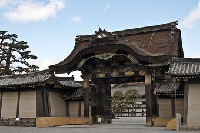

After the Emperor's palace was destroyed through natural disaster and civil war, the official residence of the Imperial Family was moved about 2 km northwest to this location in 1331, and remained here for more than 500 years, until 1868. Two of the major buildings were reconstructed in 1855: the Seiryo-den Hall once served as the Emperor's living quarters, and the Shishin-den Hall is used for important ceremonies (for example, the enthronement ceremony for each successive Emperor is held there). Kyoto Imperial Park surrounds the former palace. It is open to the public, but permission is required to enter the palace compound.
Return